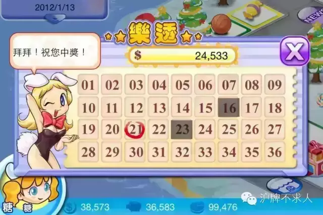
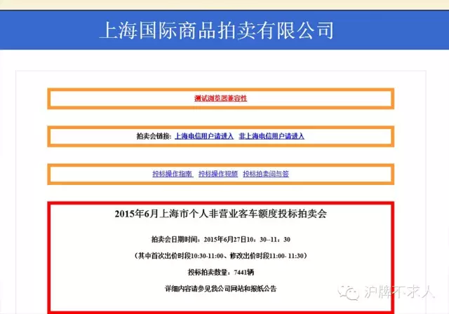
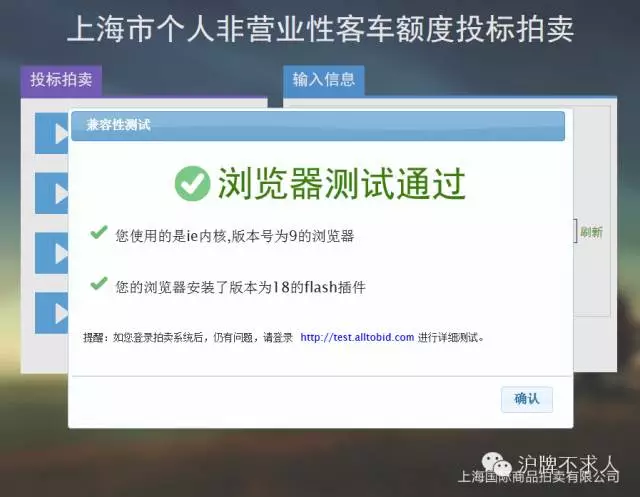
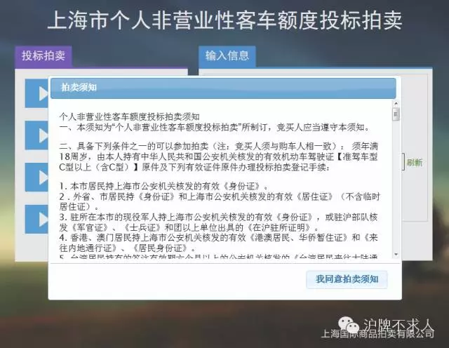
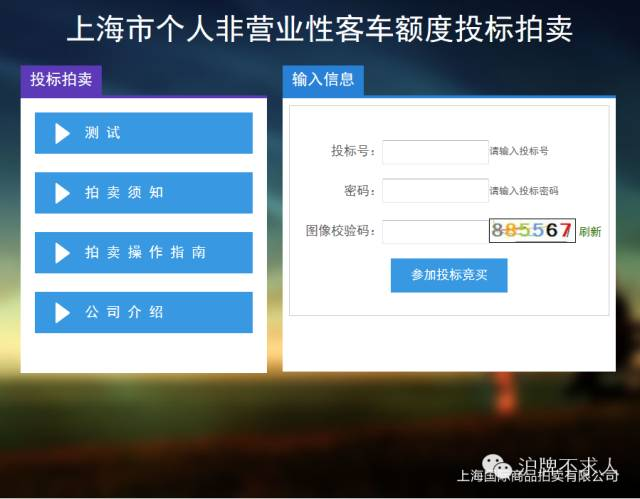
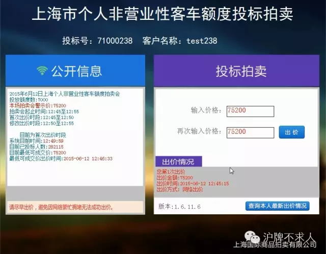
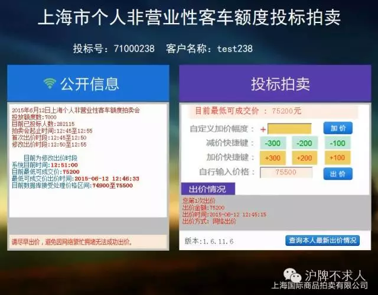
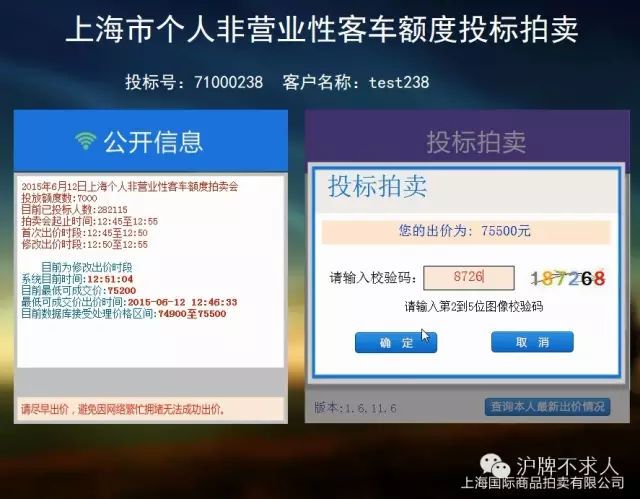
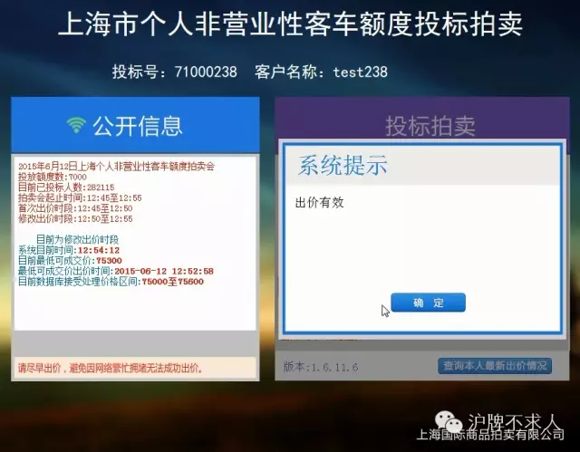

沪牌竞拍流程网拍篇

继上一篇沪牌竞拍流程预备篇，今天我们来带你领略一下每个月那激动人心的“乐透”一小时拍牌时间要做什么，那最最令人心跳加速又神往不已的11点29分开始的一分钟又要做什么。
（还没看过“预备篇”的小伙伴们，关注“沪牌不求人”，点开右下菜单“拍牌流程”中的“预备篇”即可找到）
首先呢在拍牌当天的十点半左右，你需要打开国拍行的官网拍牌地址。从2015年开始国拍行改为网页版拍牌模式，忘记那些陈年老旧的光盘安装吧。
https://paimai.alltobid.com/
据我们测试所得，这个网站只在拍牌当天开放，现在你想进，啥都看不到。打开拍牌网站的浏览器请务必使用windows自带的IE（Internet Explorer），并且装有flash插件，为防止你当天早上由于浏览器版本或者内核问题出任何幺蛾子，国拍行好心地提供了以下测试网站，全年开放，童叟无欺。请务必在一个月不拍牌的那前29天里把这个测试给做通过了。
http://test.alltobid.com/
拍牌当天，用IE打开https://paimai.alltobid.com/，你会首先遇到一个选择电信用户还是非电信用户的拍卖会链接，这时候就根据你的网络供应商做出正确选择就好。

然后国拍行网站会再为你测试一遍浏览器，一切无恙后，按了确认，会提示你拍卖须知，照着剧本同意之后就能顺利进入登陆页面。


首次登陆页面如下，你需要输入投标号，密码以及六位数字校验码。如果你不小心在拍牌过程中IE被关，电脑死机重起，或者甚至电脑坏了换备用电脑，都不用害怕。只要你重新打开好的电脑，重新进入IE打开网页，就可以再次登陆。此时会多验证一步竞买人的身份证号码，而通过验证后，之前的那次登陆就毁尸灭迹了，也就是说一个投标号只能在一台电脑的一个IE窗口上进行登陆。

不管以上步骤你如何磨磨唧唧，成功登陆之后，只要还在11点之前，你就可以看到第一阶段（10:30–11:00）首次出价界面。你的任务就是出一个和警示价一样的价格，以表示你愿意付100大洋，参加此次拍卖。而在你出价之后，即使你不参加后半段的修改出价，这100大洋也是收不回来了。

等你出完第一次价格，你所要做的就是耐心等待第二阶段（11:00–11:30）的修改出价时间到来。在11点整，系统给出的目前已投标人数不会再增长，表示此次参与竞拍人数已经确定，这个数据可以给你一些策略参考，我们以后会讲到。过了11点之后，你会看到以下修改出价界面。

上述的修改出价界面提供了你两次修改机会，由于只有两次，所以弥足珍贵。通常来说大家都会摒到11点29分的最后十几秒钟来使用，大概率也只有那个时候修改价格才有机会中标。至于具体原因以及这个修改出价界面的关键信息，我们会在“原则篇”一文里说个清楚明白（关注“沪牌不求人”，点开右下菜单“拍牌流程”中的“原则篇”即可找到）。
这个界面本身给了你自定义加价，快捷键加减价，以及出价的功能，按照字面意思就能理解。自定义加价和快捷键加减价的基数都是他上面的目前最低可成交价，点了加价或者按了快捷键，价格会自动填入到下面自行输入价格的框子里。你也可以不理睬这些功能，自己手动输入价格。当你确认好你要出的价格，点击出价，会弹出以下输入校验码的对话框。

到目前为止，校验码都为4位数字，图像会显示六位，然后下面会有文字提示要你输入前四位后四位或者第几位到第几位。一定要看清楚了输入，看不清楚可以点击图片刷新一张新的校验码。如果校验码输错，你整个出价过程又要返回重来，对于拍牌这种争分夺秒的事情来说，你懂得。
确认校验码无误后按确认，接下来你会看到一个进度条，你的价格会被提交到国拍行后台服务器。在一切都正常你也勤奋努力的前提下，你会得到以下“出价有效”的反馈。

直到11点半结束，你用了一次或者两次修改价格机会，出价有效，到这里你的沪牌网拍流程就走完了。而你也可以在拍完不久后查到国拍行官网的公告，“沪牌不求人”也会同样及时推送。
当然人生不如意十之八九，即使你勤奋努力，也未必能一切正常。也许你会因为各种幺蛾子而出价不成功。又或者即使你出价有效了，但却不在最终成交价格范围内，也是与中标无缘。
别灰心，我们此篇只是公式化地带领你走过网拍的正常流程，至于那些犄角旮旯的细节，和神出鬼没的幺蛾子，我们一定会另起一文，好好讲讲怎么与他们见招拆招。
动动你的手指，长按以下二维码，关注“沪牌不求人”，你会发现更多沪牌竞拍原创分享好文在这里。我们还会推出那些令人读之欲罢不能，跃跃欲试的数据分析和心动策略哦。